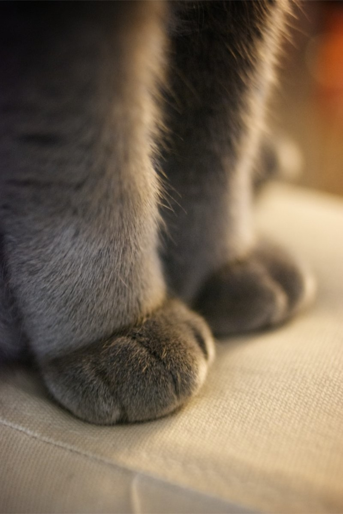

В среднем кошки тратят 2/3 суток на сон. Это означает, что девятилетний кот был активен только три года своей жизни.
В отличие от собак, кошки не имеют пристрастия к сладкому. Ученые считают, что это связано с мутацией в одном из ключевых рецепторов вкуса
Кошки, как правило, «роют» правой лапой, а коты — левой

Хотя принято считать, что первыми приручили кошек древние египтяне, самая древняя из известных домашних кошек недавно была найдена в 9500-летней могиле на средиземноморском острове Кипр. Это опережает упоминания о кошке в египетском искусстве на более чем 4000 лет.